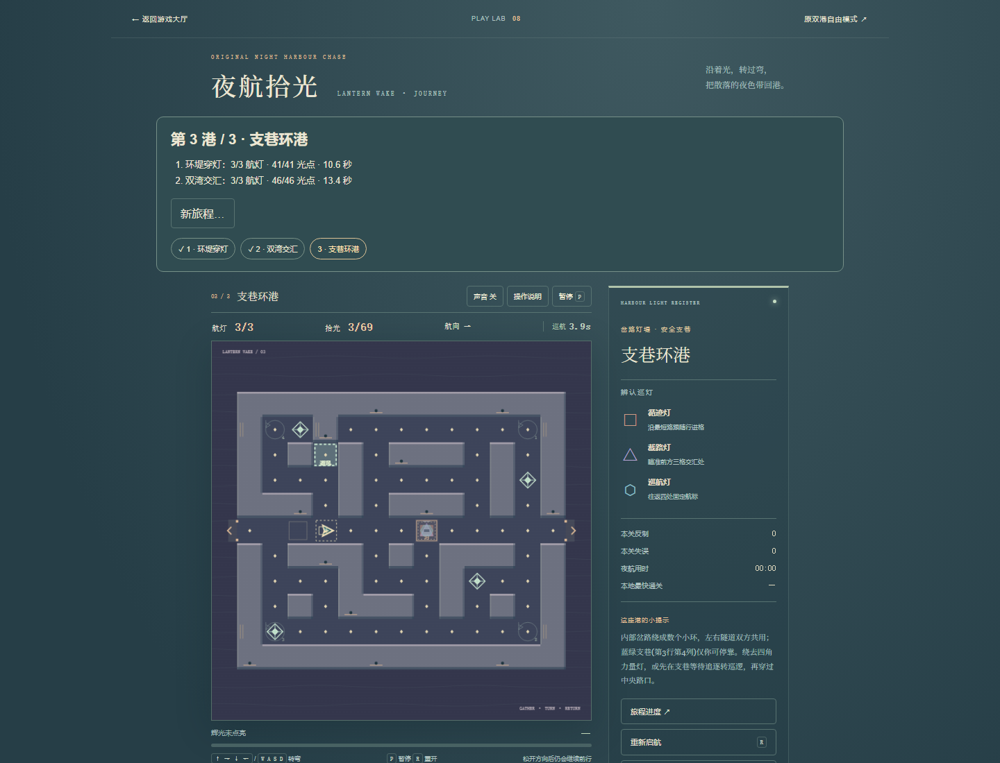
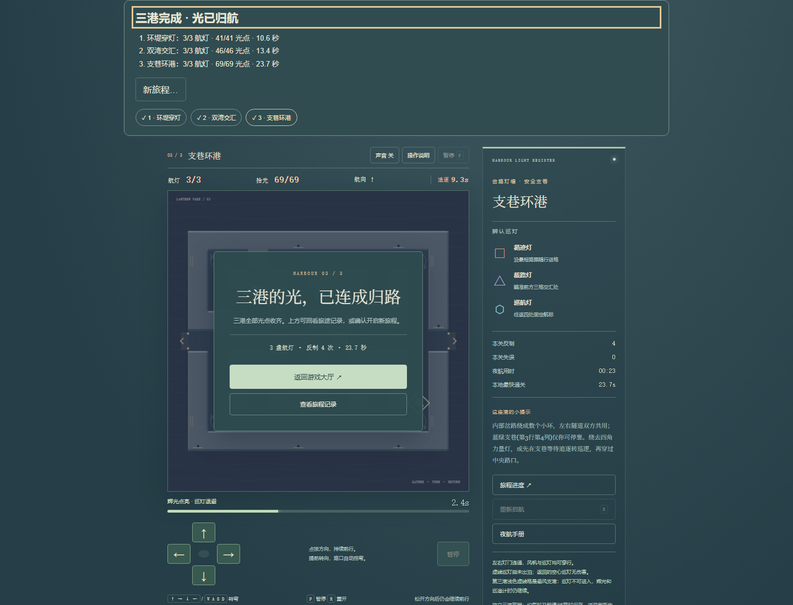
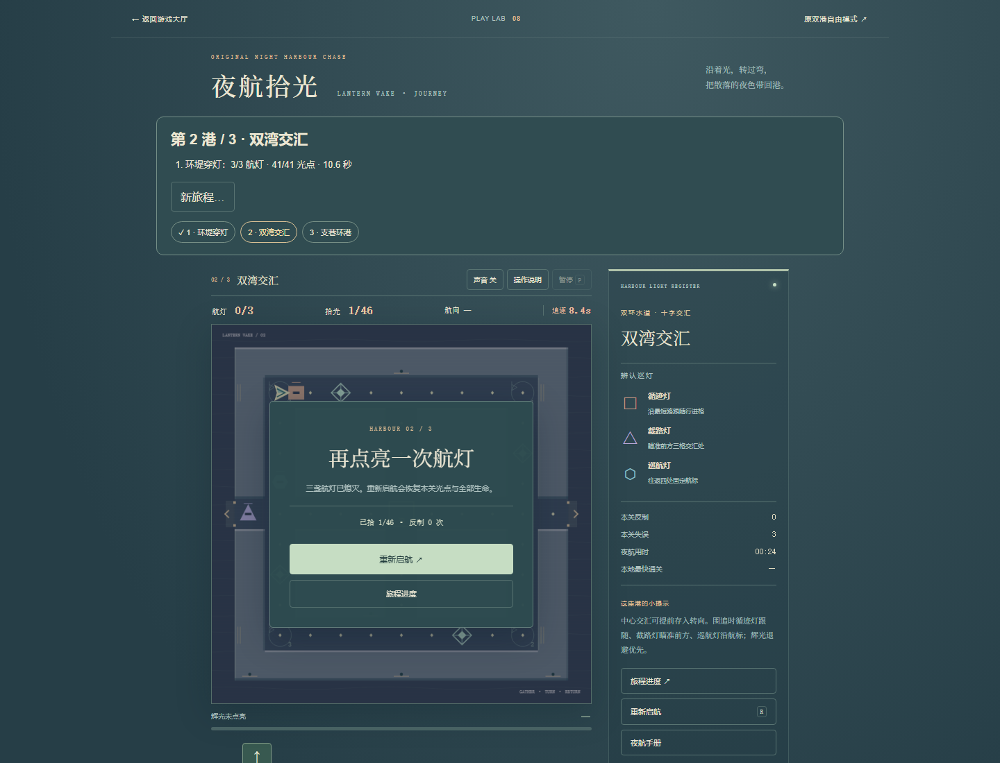
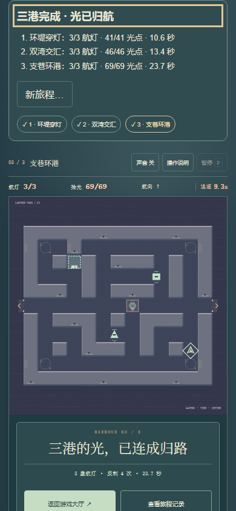
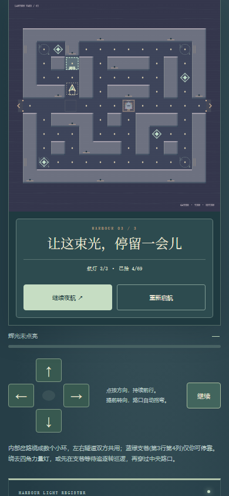

原环堤穿灯、双湾交汇完整保留，新增原创69光点“支巷环港”，接入三港目标、当前港失败重试、独立活动/关间/终态保存和结尾记录。原双港自由模式、十港及旧存档不变，不增加目录计数。
内部小环可以绕行收光，穿隧缩短路径但巡灯也能共用；辉光分散在支路，可以先绕去取力量，也可进入单入口避风支巷等待巡追阶段变化。避风不冻结辉光或阶段计时。浅色虚线格与文字标识对应真实安全规则。第三港沿用第二港速度与原辉光/三命参数，没有加血提速。

2026-10-22，本机Chromium1440×1100与390×844 CSS。只读图状态的路线/风险策略约50ms给出方向建议，使用原生方向键；第三港另有浏览器CDP可信touch短输入。未改变时间、生命、辉光、目标或胜负。用时是游戏活动时间，含触控观察，不保证真人可达或最优。
| 港口 | 普通UI收光 | 航灯 / 用时 |
|---|---|---|
| 环堤穿灯 | 41/41 | 3/3 · 10.6秒 |
| 双湾交汇 | 46/46 | 3/3 · 13.4秒 |
| 支巷环港 | 69/69 | 3/3 · 23.7秒 |
第二港先启航后不输入，24.6活动秒自然三命耗尽；刷新保留失败与第一港记录，重试恢复三命/零死亡，再正常完成。首港活动快照精确恢复并先暂停，按键/触控/排队方向清空；实际关间与末港完成会话直接刷新保留，无完成态夹具。逐港原生浏览器存档已保留，结尾新旅程默认取消、确认重开及最快纪录保留也复用了这些实际存档。


模型原两港数据及原引擎前缀逐字节保留，同输入重放逐帧一致；新港主路线22.36模型秒/3命，偏向避风路线27.97秒/2命，含约5.4秒实际支港等待和一次自然死亡。保留这种差异，不宣称绕行总是更好。9组旅程/存储测试，另有4组地图可达性、原图重放、连续隧道分段恢复与坏快照检查。模型可解与普通UI辅助完成分别记录，不等于真人乐趣。


配额失败与坏档为明确存储注入fixture：旧有效字节不删、告警准确、写入恢复后清除；坏档禁止覆盖，旧自由模式键不变。本次三港胜败与终态刷新用实际进度，无存档夹具替代。真人路径选择、反应手感、真机输入/性能、声音听感、审美与长期平衡尚未验收；没有重玩原十港或全库通关。
原始证据：普通UI · 实际存档与故障fixture · 目录入口短验 · 原港兼容/恢复 · 模型两路线与方向记录 · 9组可重跑测试。上线状态以最终交付SHA和Pages运行核验为准，本页不把预览当上线。